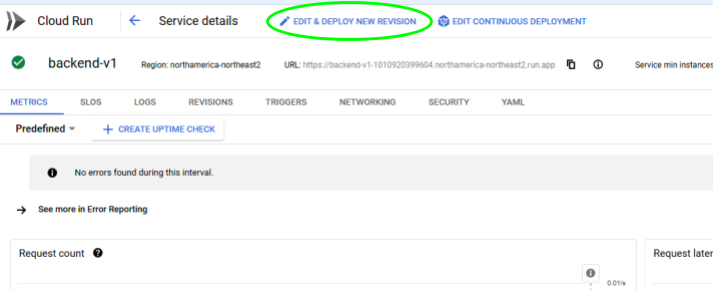
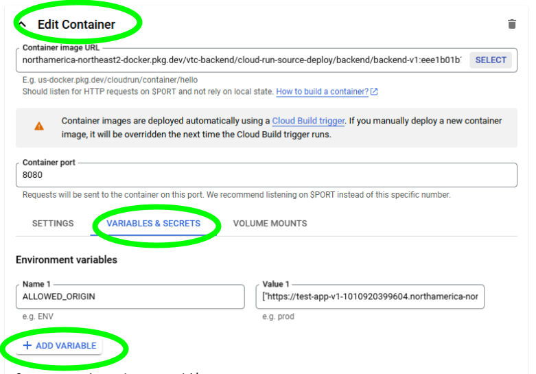

Docker
Basic Structure of a Dockerfile
A Dockerfile is a text file that contains a series of instructions on how to build a Docker image. Here’s a basic structure for the Dockerfile for the VSSF R Shiny app:
FROM rocker/shiny
WORKDIR /VSSF
RUN apt-get update -qq && apt-get -y --no-install-recommends install \
libxml2-dev \
libssl-dev \
libudunits2-dev \
libgdal-dev \
libprotobuf-dev \
protobuf-compiler \
libjq-dev \
&& rm -rf /var/lib/apt/lists/* \
&& apt-get clean
RUN Rscript -e 'install.packages(c("shinyjs", "leaflet", "leafpop", "sf", "plotly", "tidyverse", "DT", "geosphere", "ggmap","httr2", "jsonlite"))'
COPY . .
EXPOSE 8180
CMD R -e 'shiny::runApp("shiny-app/App.R", port = 8180, host = "0.0.0.0")'
|
Components
1. Base Image:
Use a base image that includes R and Shiny. The rocker/shiny image is a good choice as it comes with Shiny Server pre-installed.
2. Set Working Directory:
Use the WORKDIR instruction to set the working directory inside the container. This is where your application files will reside.
3. Install System Dependencies:
Use the RUN instruction to install any system dependencies your app may require. This can include libraries for data manipulation, visualization, etc. Check which you are using, and which the packages you are using require and only include those.
4. Install R Packages:
Use RUN R -e "install.packages(...)" to install the necessary R packages. Specify a CRAN repository to ensure package availability.
5. Copy Application Files:
Use the COPY instruction to copy your application files (e.g., app.R, ui.R, server.R, etc.) into the container. Here we are copying all the files into the docker container.
6. Expose Port:
Use the EXPOSE instruction to specify the port on which the Shiny app will run. On gcp this is assigned separately so this exposed port is exposed on the docker container but not the cloud run service.
7. Run the Application:
Use the CMD instruction to specify the command that runs your Shiny app when the container starts.
Best Practices
.dockerignore File: Create a .dockerignore file to exclude unnecessary files from being copied into the Docker image. This can help reduce the image size and build time.
Example .dockerignore:
.Rhistory
.RData
*.Rproj
*.Rproj.user
.env |
Version Control: Specify versions of R packages to ensure reproducibility. For example, use install.packages("ggplot2", version = "3.3.5").
Testing: Test your Docker image locally before deploying it to ensure that everything works as expected.
Api Request
Format
The backend API can be accessed at: <https://backend-v1-1010920399604.northamerica-northeast2.run.app/query>, but it requires authentication with google first.
Currently the way the backend is set up is that it takes a POST request in the following format:
'{
"fun": "get",
"projectId": "magnetic-runway-428121-v3",
"datasetId": "schools",
"tableId": "enrolment",
"select": "Metric, Values",
"conditions": "WHERE District_Code = 35 AND Year = 2016/2017",
"additional": ""
}' |
Parameters:
- fun: The request type for bigquery
- get: returns a full table or specific rows based on params
- exists: returns true if a table exists in big query
- TODO:
- create-table: creates a table and populates it with params
- Insert: inserts data in a table specified in params
- Select: What needs to go into the spaces after “SELECT ____”
- conditions:: The sql commands for specifying data from big query:
- The commands should be what comes after “select * from table …” in a regular string
- additional: Refers to what comes after a standard “SELECT * FROM table where x = y …”
Testing
To test if the endpoint is accessible with a cURL request, you will have to use the Google Cloud SDK, either in a local cloud sdk terminal or using the terminal in the Cloud Console. Once you’ve logged in on either method, use this command to test the backend’s communication:
curl -X POST -H "Authorization: Bearer $(gcloud auth print-identity-token)" -H "Content-Type: application/json" -d '{
"fun": "get",
"projectId": "magnetic-runway-428121-v3",
"datasetId": "schools",
"tableId": "enrolment",
"select": "Metric, Values",
"conditions": "WHERE District_Code = 35 AND Year = 2016/2017",
"additional": ";"
}' |
The -H header will contain your google accounts token that will be used to verify the request. Do not share this number with anyone. The -d data section is the body of the request. In this example it is “getting” the metric and values from the enrolment table in the schools database where the district code is 35 and the year is 2016/2017. This will return the whole table, so if you are just checking connectivity, then a smaller piece of data would be better.
API Access with R Shiny Integration
This documentation describes how to interact with the BigQuery API endpoint from an R Shiny application using the httr2 package.
Base Configuration
First, set up the necessary HTTP configuration in your R Shiny application:
library(httr2)
library(jsonlite)
# Base API configuration
base_url <- "Api-Url"
# Create a base request object
req_base <- request(base_url) |>
req_headers("Content-Type" = "application/json") |
The Api-Url can be found here
Available Endpoints
The following are the functions currently implemented in the backend, and can be accessed via direct cURL request or copying and pasting the corresponding functions into your r shiny folder
1. Query Data (/query)
Retrieves data from a BigQuery table. Makes a request to the backend with an sql query.
any_query <- function(...,
prj = "magnetic-runway-428121",
ds = "schools",
tbl = "info",
select = "*",
additional = "") {
tryCatch({
# Base API configuration
base_url <- "https://backend-v1-1010920399604.northamerica-northeast2.run.app"
# Get identity token from metadata server
tryCatch({
print("Attempting to get identity token...")
id_token <- request("http://metadata.google.internal/computeMetadata/v1/instance/service-accounts/default/identity") |>
req_url_query(audience = base_url) |>
req_headers("Metadata-Flavor" = "Google") |>
req_perform(verbosity = 1) |>
resp_body_string()
print("Token received successfully")
},
error = function(e) {
print(paste("MS Connection failed. Full error:", e))
print(paste("Error message:", e$message))
if (!is.null(e$parent)) print(paste("Parent error:", e$parent$message))
},
warning = function(w) {
print(paste("MSWarning:", w$message))
})
# Create a base request object with authorization
req_base <- request(base_url) |>
req_headers(
"Content-Type" = "application/json",
"Authorization" = paste("Bearer", id_token)
)
# Prepare the request body
body <- list(
fun = "get",
projectId = prj,
datasetId = ds,
tableId = tbl,
select = select,
conditions = paste(c(...), collapse = " "),
additional = additional
)
# Make the API request
response <- req_base |>
req_url_path("query") |>
req_body_json(body) |>
req_perform()
# Parse the response
if (resp_status(response) == 200) {
result_json <- fromJSON(rawToChar(response$body))
result_df <- as.data.frame(result_json)
return(result_df)
} else {
print(paste("API request failed: ", resp_body_string(response)))
}
},
error = function(e) {
print(paste("Connection failed:", e$message))
},
warning = function(w) {
print(paste("Warning:", w$message))
})
} |
There are two main parts to this function. The first is to make a request to the google metadata servers to get an access token. This token is then used in the header of the actual request to the backend. If you get an “MS connection failed” something has failed in this initial metadata server request. The second part is the actual request to the backend API.
2. Get Datasets (/datasets/:projectId)
This function gets all datasets in a specified project.
get_datasets <- function(project_id) {
base_url <- "https://backend-v1-1010920399604.northamerica-northeast2.run.app" # Adjust this to your server URL
tryCatch({
print("Attempting to get identity token...")
id_token <- request("http://metadata.google.internal/computeMetadata/v1/instance/service-accounts/default/identity") |>
req_url_query(audience = base_url) |>
req_headers("Metadata-Flavor" = "Google") |>
req_perform(verbosity = 1) |>
resp_body_string()
print("Token received successfully")
}, error = function(e) {
print(paste("MS Connection failed. Full error:", e))
print(paste("Error message:", e$message))
if (!is.null(e$parent)) print(paste("Parent error:", e$parent$message))
}, warning = function(w) {
print(paste("MSWarning:", w$message))
})
req <- request(base_url) |>
req_url_path_append("datasets") |>
req_url_path_append(project_id) |>
req_headers(
"Content-Type" = "application/json",
"Authorization" = paste("Bearer", id_token)
)
tryCatch({
resp <- req |> req_perform()
if (resp_status(resp) == 200) {
return(resp_body_json(resp))
}
}, error = function(e) {
warning("Failed to fetch datasets: ", e$message)
return(NULL)
})
} |
3. Get Tables (/tables/:projectId/:datasetId
Gets tables in a specified project and dataset.
get_tables <- function(project_id, dataset_id) {
base_url <- "https://backend-v1-1010920399604.northamerica-northeast2.run.app" # Adjust this to your server URL
tryCatch({
print("Attempting to get identity token...")
id_token <- request("http://metadata.google.internal/computeMetadata/v1/instance/service-accounts/default/identity") |>
req_url_query(audience = base_url) |>
req_headers("Metadata-Flavor" = "Google") |>
req_perform(verbosity = 1) |>
resp_body_string()
print("Token received successfully")
}, error = function(e) {
print(paste("MS Connection failed. Full error:", e))
print(paste("Error message:", e$message))
if (!is.null(e$parent)) print(paste("Parent error:", e$parent$message))
}, warning = function(w) {
print(paste("MSWarning:", w$message))
})
req <- request(base_url) |>
req_url_path_append("tables") |>
req_url_path_append(project_id) |>
req_url_path_append(dataset_id) |>
req_headers(
"Content-Type" = "application/json",
"Authorization" = paste("Bearer", id_token)
)
tryCatch({
resp <- req |> req_perform()
if (resp_status(resp) == 200) {
return(resp_body_json(resp))
}
}, error = function(e) {
warning("Failed to fetch datasets: ", e$message)
return(NULL)
})
} |
4. Get Headers (/column_headers/:projectId/:datasetId/:tableId)
Gets all headers in a specified project, dataset and table
get_headers <- function(project_id, dataset_id, table_id) {
base_url <- "https://backend-v1-1010920399604.northamerica-northeast2.run.app" # Adjust this to your server URL
tryCatch({
print("Attempting to get identity token...")
id_token <- request("http://metadata.google.internal/computeMetadata/v1/instance/service-accounts/default/identity") |>
req_url_query(audience = base_url) |>
req_headers("Metadata-Flavor" = "Google") |>
req_perform(verbosity = 1) |>
resp_body_string()
print("Token received successfully")
}, error = function(e) {
print(paste("MS Connection failed. Full error:", e))
print(paste("Error message:", e$message))
if (!is.null(e$parent)) print(paste("Parent error:", e$parent$message))
}, warning = function(w) {
print(paste("MSWarning:", w$message))
})
tryCatch({
req <- request(base_url) |>
req_url_path_append("column_headers") |>
req_url_path_append(project_id) |>
req_url_path_append(dataset_id) |>
req_url_path_append(table_id) |>
req_headers(
"Content-Type" = "application/json",
"Authorization" = paste("Bearer", id_token)
)
resp <- req |> req_perform()
if (resp_status(resp) == 200) {
return(resp_body_json(resp))
}
}, error = function(e) {
warning("Failed to fetch datasets: ", e$message)
return(NULL)
})
} |
5. Get Unique Values (/unique_values/:projectId/:datasetId/:tableId/:columnName)
Gets all the unique values from a specific column, in a specified project, dataset and table.
get_unique_values <- function(project_id, dataset_id, table_id, column_name) {
base_url <- "https://backend-v1-1010920399604.northamerica-northeast2.run.app"
tryCatch({
print("Attempting to get identity token...")
id_token <- request("http://metadata.google.internal/computeMetadata/v1/instance/service-accounts/default/identity") |>
req_url_query(audience = base_url) |>
req_headers("Metadata-Flavor" = "Google") |>
req_perform(verbosity = 1) |>
resp_body_string()
print("Token received successfully")
}, error = function(e) {
print(paste("MS Connection failed. Full error:", e))
print(paste("Error message:", e$message))
if (!is.null(e$parent)) print(paste("Parent error:", e$parent$message))
})
tryCatch({
req <- request(base_url) |>
req_url_path_append("unique_values") |>
req_url_path_append(project_id) |>
req_url_path_append(dataset_id) |>
req_url_path_append(table_id) |>
req_url_path_append(column_name) |>
req_headers("Content-Type" = "application/json",
"Authorization" = paste("Bearer", id_token))
resp <- req |> req_perform()
if (resp_status(resp) == 200) {
return(resp_body_json(resp))
}
}, error = function(e) {
warning("Failed to fetch unique values: ", e$message)
return(NULL)
})
} |
Troubleshooting
1. Check API URL:
Ensure that the base_url is correctly set to your API endpoint. Test the URL in a web browser or a tool like Postman to confirm it's reachable.
2. Verify API Status:
Check if the API server is running and accessible. You can use tools like curl or Postman to send a test request to the API. Testing
3. Inspect Network Issues:
Ensure there are no network issues preventing your Shiny app from reaching the API. Check your firewall settings and network configurations.
Review API Response:
If the API returns an error, inspect the response body for error messages. You can log the response content in your Shiny app to help diagnose issues.
5. Validate Input Parameters:
Ensure that the input parameters (e.g., dataset_id, table_id) are valid and correctly formatted. Invalid parameters can lead to API errors.
6. TryCatch:
To prevent your app from crashing when an API request fails you can use a trycatch block to ensure the program continues to function properly:
The error function is called if the request attempt fails. After the error function is called, the program continues.
Secrets and Environment Variables
All API keys and other sensitive data must not be in any code that is committed or otherwise uploaded anywhere on the Internet. Instead it must be stored as an environment variable. For example:
google_api_key <- 9845vn29475ynb2b3948572438 |
Should be rewritten like this:
google_api_key <- Sys.getenv("GOOGLE_MAPS_API_KEY", "")
if (google_api_key == "") {
stop("Google Maps API key not found in environment variables")
} |
The if statement is optional, but recommended for values that are essential for the code to run as it prevents the rest of the code from running if the key is left blank (ie not configured correctly)
To add the value of the API key to the environment variables:
- Navigate to the “Edit and Deploy New Revision” menu
- 
- Under the “Edit Container” section click the “Variables and Secrets” and click “+ Add Variable”
- 
- In the Name section write what you would like to call the variable in your code:
- In this case we use ALLOWED_ORIGIN to refer to our environment variable:
- Sys.getenv("ALLOWED_ORIGIN", "")
- In the Value section copy and paste the value of the variable.